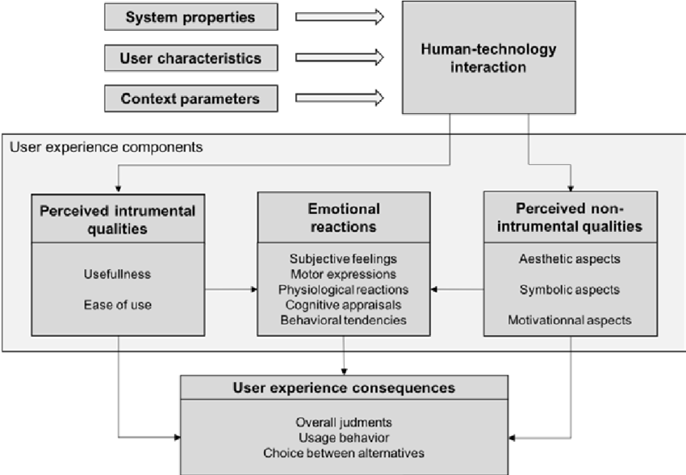

Unit 7: Artefacts
e-Portfolio Activity: Data Structures Reflection
Task: Think about an online system which you use on a daily basis. Consider how it might operate at the back-end using data structures.
One of the online systems I use the most, several times a day, is YouTube. Google’s video streaming platform is one of the most popular websites on the internet, with millions of users streaming and creating content every day.
To make YouTube work the way it does, several systems work together to allow video upload and search, user account creation, likes, comments, counting views, and subscribing to channels, to name a few. There is not much information available online regarding the data structures used by YouTube, but based on some information by Google (N.D.), I can conclude the following:
- Hashmaps - Used to efficiently search through large amounts of key:value pairs
- Trees - Used to store data in a hierarchical manner
- Linked Lists - Used to store a collection of items in a particular order
Based on this information, one may assume that hashmaps are used to retrieve videos or user accounts based on ID or UUID. Trees may be used to display the history of a comment section, or to store a user's activity. Linked lists are likely used for playlists, or watch lists generated by YouTube’s recommendation algorithm.
References
Google (N. D.) Data Structures & Algorithms. Available from: https://techdevguide.withgoogle.com/paths/data-structures-and-algorithms/#sequence-2 [Accessed 31 October 2023].
e-Portfolio Activity: Components of User Experience
Task: In relation to the 'Components of User Experience' model from Van der Linden et al., (2019), consider the 'Emotional reactions' of user experience.
Question: As a Project Manager, what might be your response to manage the emotional reactions of a customer?
Personally, before diving into any other academic papers, I believe it is very important to clearly communicate with the customer from the very beginning. Often, negative emotional responses (i.e., the type of emotional response we want to avoid) are a result of miscommunciation, or a lack of communication in general. This is frequently a result of miscommunication between "operational" staff and "technical staff". However, let us see what academia says about this topic.
In their article about Product Design, Demirbilek & Sener (2010) discuss how a product can be designed in a way to purposely trigger certain emotions within the customer. They propose however, that an emotional response is not caused by a specific object or situation, but rather by the thoughts associated to them. They also suggest that further research should be conducted on how the basic trio (i.e., 'user', 'emotion', and 'product design') relate to each other. This is an interesting train of thought, which not only relates to product design, but also to project management. The project manager is faced with a challenge - not only does he/she need to manage the project in a way that causes positive emotional responses, but fulfilling the customers requirements and wishes, but they also have to manage the customers expectations in regards to the final product.
In an article written by Agarwal & Meyer (2009), the authors discuss the importance of considering both emotional response and usability to form a complete picture of the user experience. This further adds to my hypothesis that clear communication between users and project managers is vital for the success of a project. Whether we are creating a physical product or a concept (such as a new airspace design), asking for emotional feedback (such as levels of stress, etc.) will form a much clearer picture of the user's experience, and will also directly affect the usability of a product.
Other papers, such as the article written by Clarke (2009), discusses how project managers themselves should possess a good degree of emotional awareness whilst managing customer relations in various social environments, as their own emotions and behaviour might influence the emotions of the user.
Conclusion
Considering the research conducted by the authors mentioned above, I think it would be fair to say that my inital assessment was correct. The project manager should clearly communicate with the customers and users, create a positive environment for them, and create a product or deliver a service that will evoke positive emotions.
References
Demirbilek, O. & Sener, B. (2010) Product design, semantics and emotional response. Ergonomics 46(13-14): 1346-1360. DOI: https://doi.org/10.1080/00140130310001610874 [Accessed: 13 November 2023].
Agarwal, A. & Meyer, A. (2009) Beyond usability: evaluation emotional response as an integral part of the user experience. CHI EA '09: Extended Abstracts on Human Factors in Computing Systems. Boston, Massachussets. 4 - 9 April 2009. DOI: https://doi.org/10.1145/1520340.1520420 [Accessed 13 November 2023].
Clarke, N. (2009) Projects are emotional: How project managers' emotional awareness can influence decisions and behaviours in projects. International Journal of Managing Projects in Business3(4): 604-624.Available from: https://www.emerald.com/insight/content/doi/10.1108/17538371011076073/full/html [Accessed 13 November 2023].